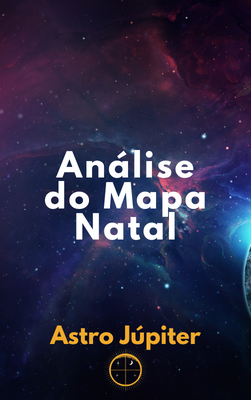

O famoso mapa astral é um retrato do céu no momento exato do seu nascimento. Mostra as posições dos planetas no instante em que você nasceu e teve contato com a vida terrena.
Estudamos o mapa astral, para entender um pouco mais sobre as características que possuímos e que de alguma forma estão ligadas aos planetas e às outras pessoas que possuem as mesmas posições planetárias que nós.
Pense que o mapa astral é uma caixinha cheia de pequenas possibilidades (cheia mesmo, abarrotada!)
São as nossas escolhas (conhecemos isso como livre arbítrio), o ambiente em que vivemos, as pessoas com quem convivemos e amamos que moldam quem somos. E dia a dia fazemos novas escolhas que nos modificam, mesmo que só um pouquinho. Pequenas e simples decisões que tomamos como, vestir uma camiseta azul ou cinza, ir pela esquerda ou pela direita; tudo isso impacta em quem nós, em como o mundo nos vê, modifica o mundo (nosso pequeno mundo).
Das centenas de possibilidades do mapa astral, nós escolhemos algumas e sua combinação resulta em determinadas características. Se escolhermos uma combinação diferente, logo o resultado será diferente.
Para mudarmos quem somos, temos que escolher combinações melhores dentro das possibilidades que o nosso mapa astral nos mostra. Alcançando a melhor versão de nós mesmos.
O Astro Júpiter pode te ajudar nesse jornada. Com a nossa Análise do Mapa Astral, você receberá uma análise dos seguintes pontos:

O mapa natal elaborado pelo Astro Júpiter é uma excelente forma de entrar em contato com essas características, potencias e debilidades, de forma de iniciar seu processo de transformação pessoal.